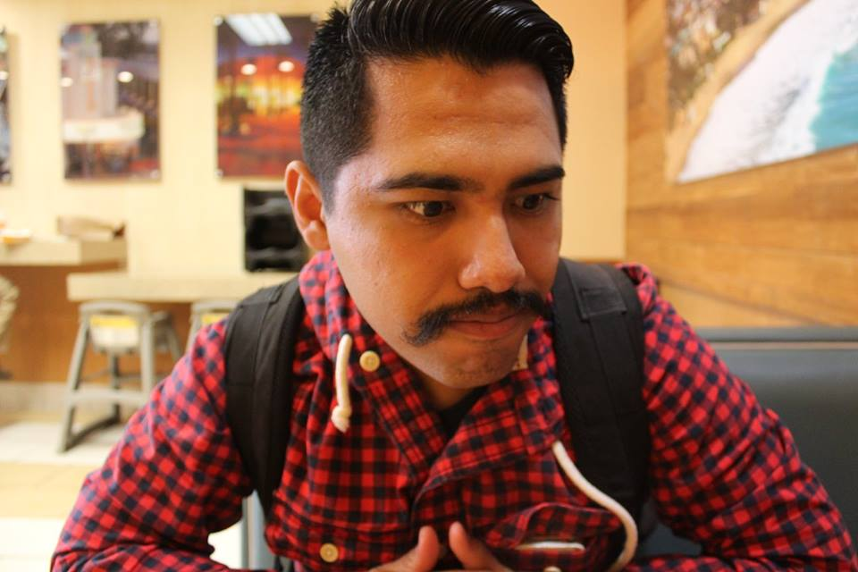

About Me

I am Brandy Antonio(no that is not a typo...my name is Brandy) born and raised in Santa Ana, Ca. I have a B.A. in History from Cal State Fullerton and the first in my family to do so. I have been playing soccer for around 20 years now and not thinking of ever slowing it down. I am a great team player and love to help people.
My work experience has had me experience customer service in different ways. I have had to be a sales associate, delivery man, customer service representative and supervisor. I have worked at retail (CVS pharmacy and radioshack). Worked in the food industry(Bucca di Beppo, Papa Johns, and Pizza Hut) and the delivery industry (Amazon). I currently work as a customer service representative at Noritz America. I help service technicians and plumbers troubleshoot our brand tankless water heaters. Although I came in knowning nothing about venting, plumbing and water heaters I have become very effective in troubleshooting.
I want to get my foot in an industry that is constantly changing and challenging me to become better. I had started a major in Computer Science before I switched over to history but that never stopped my love for programming. I love the feeling of struggling to solve a problem and with persistance finding the answer. That feeling of success is what I love the most.